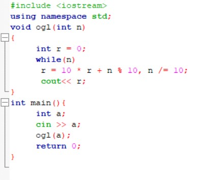
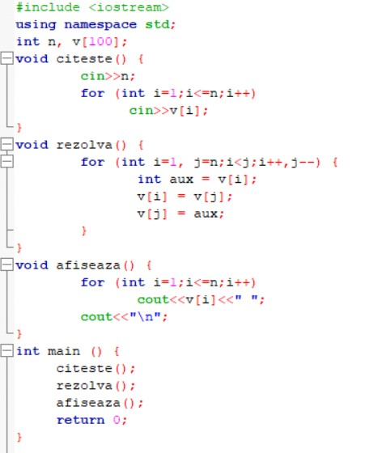
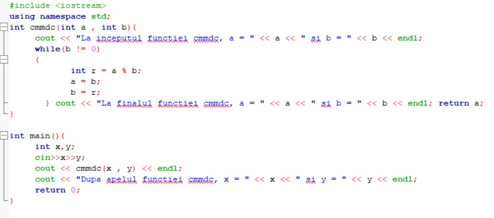
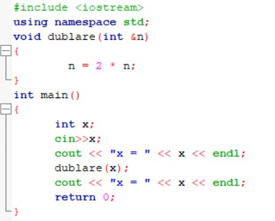

Următoarele funcții prelucrează variabile, efectuând diferite și variate sarcini.
Afișarea oglinditului unui număr
În imaginea de mai jos se apelează funcția ogl și se afișează în aceasta valoarea oglinditului variabilei n (inversul lui)

Afișarea oglinditului unui vector
În imaginea de mai jos se citește un vector printr-o funcție void, iar apoi se modifică vectorul și se afișează de la coadă la cap. Putem observa că într-un singur program s-au folosit mai multe funcții void.

Afișarea celui mai mare divizor comun a două numere
În imaginea de mai jos se citesc două numere, iar apoi se află se află cel mai mare divizor comun în funcția cmmdc. Este să observăm că variabilele a și b se vor schimba în funcția cmmdc, dar variabilele x și y (prin care este apelată funcția) for rămâne neschimbate.

Afișarea dublului unui număr (prin referință)
În imaginea de mai jos funcția dublare se apelează prin intermediul variabilei de referință x, așadar n va avea la început valoarea lui x, dar în urma calculelor nu se va schimba doar variabila n, ci și variabila x (deoarece este prin referință)
